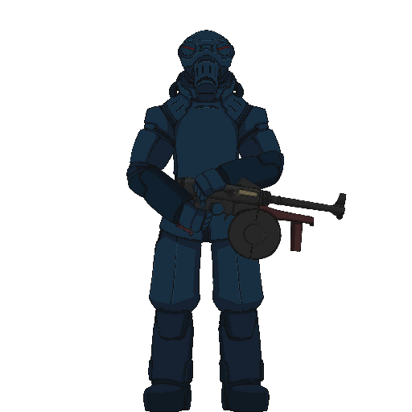
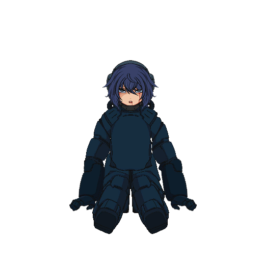
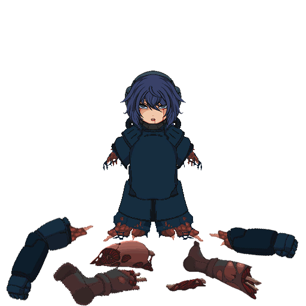
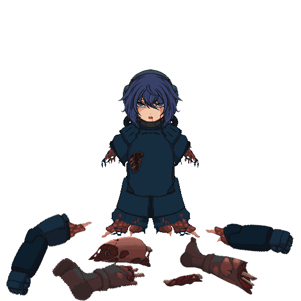
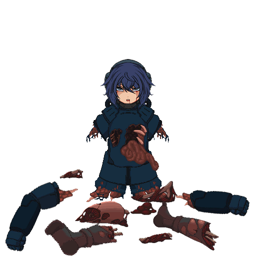

突击兵是以侦察任务为主的斥候单位，具备极强的侦察意识和渗透能力，属于非常关键的作战力量。
但那是以前的事情了。自从被启蒙波洗脑，曾经的能力也成为无稽之谈了。
不试试看点击一下吗？







附加内容
在“幕间”关卡中，走到关卡起点可以移动至“要塞之外”。
许多玩家直到游戏全流程通关后，在圣殿中无目的乱逛时，才发现还有一个名叫“要塞之外”的关卡。
在要塞之外，有一家客栈。
您可以坐下来，点一份茶点，与客栈的老板娘闲谈。
客栈的老板娘可以向您提供目前为止遇到过的所有敌人的情报，还能使用“代币”调整敌人的属性。
例如：
突击兵 - 渗透员 / 蛙人 -
突击兵是以侦察任务为主的斥候单位，具备极强的侦察意识和渗透能力，属于非常关键的作战力量。
但那是以前的事情了。自从被启蒙波洗脑，曾经的能力也成为无稽之谈了。
不试试看点击一下吗？




